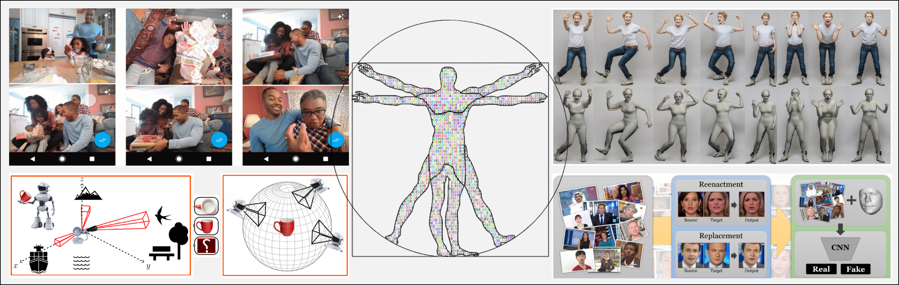

Speakers


ICCV 2019 Workshop onSensing, Understanding and Synthesizing Humans |
||
COEX Convention Center, Rm#300, Seoul, Korea (Google Maps)
|
||

Great progress has been achieved in human sensing, understanding and synthesis. We further identify three key issues of the future directions:
Micro-video is a great way to communicate science. In this workshop, we look for 1-minute tech demos that illustrate the cutting-edge advances in human sensing, understanding and synthesis from both academia and industry.
Topics: human sensing techniques, 3D human, human/face analysis, action and moments, human/face synthesis, digital humans.
Submission: Please submit your 1-minute demo video to sense.human.workshop@gmail.com.
Deadline: August 16, 2019
Fast-Forward Exhibition: We will select top demos and invite them for a fast-forward exhibition during the workshop.
13:55 - 14:00 . Opening Remarks.
14:00 - 14:45 . Invited Talk 1.
14:45 - 15:30 . Invited Talk 2.
15:30 - 15:50 . Coffee Break.
15:50 - 16:00 . Demo Fast-Forward Exhibition.
16:00 - 16:45 . Invited Talk 3.
16:45 - 17:30 . Invited Talk 4.
17:30 - 17:35 . Closing Remarks.